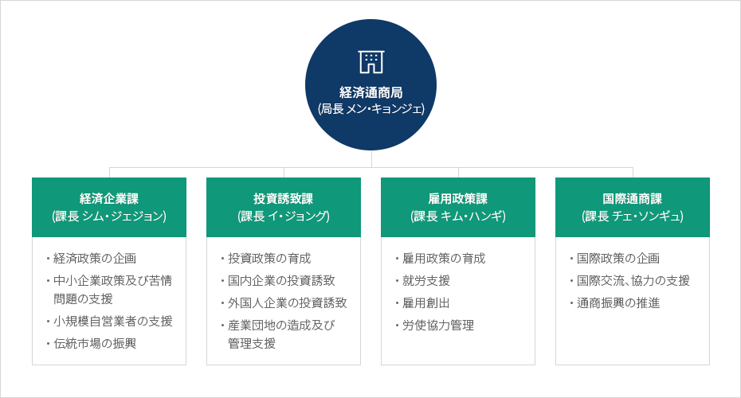

組織図
- Home
- 忠北の紹介
- 組織図


경제통상국(국장 맹경재)
-
경제기업과(과장 심재정)
- 경제정책 기획
- 중소기업 정책 및 애로지원
- 소상공인 지원
- 전통시장 진흥
-
투자유치과(과장 이종구)
- 투자정책 육성
- 국내기업 투자유치
- 외국인기업 투자유치
- 산업단지 조성 및 관리 지원
-
일자리 정책과(과장 김한기)
- 일자리 정책 육성
- 취업지원
- 일자리 창출
- 노사협력 관리
-
국제통상과(과장 최성규)
- 국제정책 기획
- 국제교류, 협력 지원
- 통상진흥 추진